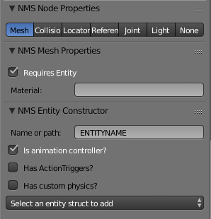

Exporting animated scenes
NMSDK is able to handle scene with animations, allowing your creations to be more than just static objects, but beautiful animated constructions!
Adding animations
In blender, animations are known as actions. Each action contains the information about the rotation, translation and scale of the object on any given frame. You may specify this data by generating f-curves, or by simply inserting keyframes with the object in specific locations. To add an action open the "Dope sheet" view and set the mode as "Action Editor". In this view you can add new actions.
To allow for maximum flexibility of animations in regards to exporting, it is very importantant that actions are named in a specific way.
ALL actions that are to be exported with NMSDK MUST have the format <action_name>.<object name>.
So for example, if you want to have an animation in the scene called WALK, and two objects called LEFT_LEG and RIGHT_LEG, you would create actions called WALK.LEFT_LEG and WALK.RIGHT_LEG respectively.
It is very important if you have multiple animations per object that you give each action a fake user (Press the "F" button next to the name of the action in the list). This way the data block is saved. It is also recommended that each action is stashed so that it is is stored in the NLA tracks for the object. This shouldn't affect the resulting animations, however it keeps the actions stored nicely in the NLA tracks.
Chosing an animation handler
For the game to know the details of the animation(s) you added, an attached entity file MUST be specified as an entity controller.

It is important to note that only one associated entity file may be specified as an animation controller in each scene at a time. Specifying more that one will not raise an error, but instead, only the first will be used, and any others will be ignored.
Specifying the idle animation
NMS has two types of animations; Idle animations, and Anim animations. The Idle animation doesn't require any action triggers to be called and will play while the scene is spawned (depending on the animation settings). The Anim animations however are only run when an action trigger causes them to be. It is only possible to have one Idle animation but you can have as many Anim animations as you like.
To specify which animation is the idle animation, you simply select it from the drop down box in the Animation Controls section of the NMSDK toolbar.
If you do not see your animation listed, make sure you click the refresh button as it isn't possible to have the list updated automatically whenever you add a new animation.